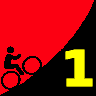

|  |
2009 Low-Key Hillclimbs Week 1 Results: Montebello 03 Oct 2009 |
| Ready for the climb! (Luke Burton photo) |
Perfect weather met the riders as we began the series with that traditional foundation of the Low-Key Hillclimbs: Montebello Road.
In the men's division, Chris Phipps, riding this year for an impressive Western Wheelers squad, showed up to repeat his 2007 victory, shaving a few precious seconds off his time from that year. Tracy Colwell holds on to the record with his amazing 25:40 from 1997. In second, an impressive Justin Lucke, with arguably his strongest Low-Key result yet. And in third, Low-Key newcomer Dominic Pezzoni opened some eyes: we'll be seeing more of him in coming weeks, I hope!
Among the strong women's turn-out, Rikke Preisler of powerhouse Sisters (sorry... "and Misters") of No Mercy edged out Roaring Mouse's Beverley Cheney, the latter on her 'cross bike, for the top time. Next up: Laura Hipp, providing her support to a Western Wheelers team victory for the day. Roaring Mouse and San Jose also cracked 330 points.
Breathing down the proverbial tire tread of Western Wheelers in the team standings: Los Gatos. Another pathlogically close battle brewed for third, with Sisters and Misters of No Mercy squeaking past Bike Trip.
In the hybrid-electric division, Bill Bushnell decided to stress the latter rather than the former, doing the climb mostly on battery power. This didn't quite work out due to some electrical problems at the bottom. With the relatively shallow depth of the hybrid-electric field, he still had no problem taking the 100 points for Team Low-Key.
It's always great to see juniors come out to the climbs. This week, Andre Swart did a very solid ride to take the lead in the junior ranking. Perhaps more impressive was the ride by Andrew Conklin, who had some difficulty on the climb but stuck it out to finish, anyway! Nicely done!
Thanks to Illumix Studios for photographing today's climb! Photos aren't yet posted as of this update, but check their site often for a posting! Low-Key loves rider photos!
And a very special thanks this week to Ron Brunner, who's meticulous review of video allowed us to recover from an otherwise catostrophic timing problem, and still get the results out same-day. This after crushing the hill in an impressive 30:21, to crack the top 20 with over 116 points in what was a very strong field.
Thanks to help from Brenda Brunner, Ron Brunner, Luke Burton, Juliana Chen, Tim Clark, Cara Coburn, Calvin Do, Christine Holmes, Howard Kveck, and Pat Parseghian for making today's climb possible!median time = 32:33
pl # rider team category time mph fph score 1 6 Bill Bushnell Low-Key Hybrid 32:33 9.77 3576 100.00
median time = 35:13
pl # rider team category time mph fph score 1 66 Christopher Phipps Western Wheelers 35+ 26:03 12.21 4468 135.22 2 40 Justin Lucke LGBRC 35+ 27:27 11.58 4240 128.32 3 196 Dominic Pezzoni 20-24 27:57 11.38 4165 126.03 4 49 Eric Balfus LGBRC 27:59 11.36 4160 125.88 5 93 Thomas Novikoff Webcor/Alto Velo 2 28:35 11.13 4072 123.24 6 28 Ciaran Byrne 28:35 11.13 4072 123.24 7 201 Rune Dahl Western Wheelers 45+ 28:53 11.01 4030 121.96 8 101 Mark Edwards Bike Trip 45+ 28:55 11.00 4025 121.82 9 156 Rich Hill LGBRC 40+ 28:59 10.97 4016 121.54 10 32 Nils Tikkanen Bike Trip 3 29:03 10.95 4007 121.26 11 58 Clark Foy Metrigear 45+ 29:07 10.92 3998 120.98 12 71 Greg McQuaid San Jose Bike Club 35+ 29:09 10.91 3993 120.84 13 151 Doug Philippone Palantir 35+ 29:37 10.74 3930 118.94 14 139 Laurent Pfertzel 45+ 29:38 10.73 3928 118.87 15 7 James Porter Western Wheelers 3 29:41 10.71 3921 118.67 16 80 Bill Davis Google 25-29 29:55 10.63 3891 117.74 17 110 Shon Grabbe San Jose Bike Club 35+ 30:05 10.57 3869 117.09 18 170 Raffi Jilizian Form Fitness 40+ 30:09 10.55 3861 116.83 19 23 Ron Brunner Low-Key Commuter 30:21 10.48 3835 116.06 20 30 Jason Butler Sr's & Mr's of No Mercy 30+ 30:37 10.39 3802 115.05 21 98 Bruce Gardner Sr's & Mr's of No Mercy 35+ 30:43 10.35 3789 114.68 22 129 Ammon Skidmore Team Roaring Mouse 30+ 30:53 10.30 3769 114.06 23 25 Carl Butler Sr's & Mr's of No Mercy 50+ 31:31 10.09 3693 111.77 24 33 Martin Hyland Western Wheelers 50+ 31:33 10.08 3689 111.65 25 120 Peter Mehlitz 45+ 31:53 9.97 3651 110.48 26 144 Andy Brisnehan Western Wheelers 50+ 32:09 9.89 3621 109.56 27 53 Jim Langley Bike Trip 55+ 32:15 9.86 3609 109.22 28 44 Michael Chasse Bike Dads 45+ 32:19 9.84 3602 109.00 29 74 Benoit Pelczar Bike Trip 35+ 32:34 9.76 3574 108.16 30 45 Sean Broeder Silicon Valley Triathlon 45+ 32:39 9.74 3565 107.89 31 94 Nathan Cauffman UID 30+ 32:39 9.74 3565 107.89 32 161 Mike Salameh 55+ 32:55 9.66 3536 107.01 33 48 Sharad Verma Commuter 32:59 9.64 3529 106.80 34 31 Wolfgang Hoeflich 45+ 33:01 9.63 3525 106.69 35 42 Nick Pelly Google 33:13 9.57 3504 106.05 36 59 Scott Martin Bike Trip 50+ 33:39 9.45 3459 104.68 37 24 Dennis Pederson Bike Trip 45+ 33:42 9.44 3454 104.53 38 115 Martin Hampton Pen Velo/Pomodoro 45+ 33:44 9.43 3451 104.42 39 96 Phil Dubach Western Wheelers 35+ 33:47 9.41 3445 104.27 40 100 Eric Murray Webcor/Alto Velo 45+ 33:47 9.41 3445 104.27 41 78 Brian Sterling 33:47 9.41 3445 104.27 42 145 Vidya Swaminathan UC Davis 30+ 33:47 9.41 3445 104.27 43 20 Alan Weatherall San Jose Bike Club 45+ 4 33:47 9.41 3445 104.27 44 150 Daniel Talayco Two wheel tango Goat Ibex 34:05 9.33 3415 103.35 45 79 Gino Cetani Western Wheelers 35+ 34:06 9.33 3413 103.30 46 43 Joseph Sullivan 35+ 34:06 9.33 3413 103.30 47 83 Rand Hill Team Apple 35+ 34:06 9.33 3413 103.30 48 136 Fred Egley Dos Egley's 45+ 34:23 9.25 3385 102.45 49 88 Jeff Loutit 34:25 9.24 3382 102.35 50 141 Franz Kelsch UltraCycle.net 60+ 34:29 9.22 3376 102.15 51 140 Gary Shockey 35+ 34:39 9.18 3359 101.66 52 56 David Vrane SLACer 45+ 34:57 9.10 3330 100.79 53 26 Ben Stern Team Roaring Mouse 30+/Fixed 35:09 9.05 3312 100.21 54 124 Frederick Stamm Pen Velo/Pomodoro 55+ 35:10 9.04 3310 100.17 55 73 Vince Cummings 35:17 9.01 3299 99.83 56 109 Shance Ordell Western Wheelers 35+ 35:31 8.95 3277 99.18 57 180 Dan Brehmer SLACer 40+ 35:33 8.95 3274 99.09 58 114 Andre Swart Ryro Junior 35:33 8.95 3274 99.09 59 146 William Von Kaenel LGBRC 50+ 35:59 8.84 3235 97.89 60 29 Thomas Rabedeau SLACer 50+ 36:01 8.83 3232 97.80 61 111 Gary Griffin Bike Trip 55+ 36:13 8.78 3214 97.26 62 176 Amir Weiss LGBRC 35+ 36:23 8.74 3199 96.82 63 81 Francis Cebedo MTBR.com 40+ 36:29 8.72 3190 96.55 64 75 Dan Cervelli Palantir 36:35 8.69 3182 96.29 65 181 Dirk Rohloff Plus3/Fightin' Bobas 50+ 36:41 8.67 3173 96.02 66 85 John Carrino Palantir 25-29 37:01 8.59 3145 95.16 67 103 Christopher Pistor 37:09 8.56 3133 94.82 68 35 Stephen Fong San Jose Bike Club 40+ 37:21 8.51 3116 94.31 69 160 Mike Czepiel Apple 25-29 37:21 8.51 3116 94.31 70 69 Nic Brummell Atlas 45+ 37:47 8.42 3081 93.23 71 216 Steve Blain Sr's & Mr's of No Mercy 55+ 37:51 8.40 3075 93.06 72 70 Garry Chinn Silicon Valley Triathlon 37:55 8.39 3070 92.90 73 27 Loren Vorreiter Western Wheelers 40+ 37:59 8.37 3065 92.74 74 91 Patrick Callahan Western Wheelers 40+ 38:09 8.34 3051 92.33 75 155 Larry Klein Jerry 45+ 38:19 8.30 3038 91.93 76 54 Barry Burr Two legs to stand on 50+ 38:25 8.28 3030 91.69 77 76 Richard Jacinto Trigon 45+ 39:11 8.12 2971 89.90 78 64 Han Wen 40+ 39:21 8.08 2958 89.52 79 41 Petro Hizalev Webcor/Alto Velo 30+ 39:39 8.02 2936 88.84 80 38 Thomas Preisler LGBRC 50+ 39:59 7.95 2911 88.10 81 68 Jan Berka 39:59 7.95 2911 88.10 82 206 Jeff Miller 40+ 40:27 7.86 2878 87.08 83 130 Steve Chapel Western Wheelers 65+ 40:35 7.84 2868 86.80 84 36 Al Williams Webcor/Alto Velo 65+ 42:15 7.53 2755 83.37 85 51 Richard Contreras 50+ 42:16 7.52 2754 83.34 86 125 Jerrick McCullough 40+ 42:16 7.52 2754 83.34 87 171 Scott Barry 40+ 42:33 7.47 2736 82.78 88 86 Gerald Jeffs Cycling Systems 50+ 42:49 7.43 2719 82.27 89 90 Tim Sutton Plus 3 45+ 43:01 7.39 2706 81.89 90 116 Kenneth Fong Team Rwanda 45+ 43:31 7.31 2675 80.95 91 52 Barry Chaffin Western Wheelers 43:49 7.26 2657 80.39 92 119 Gary Swart Ryro Senior 44:29 7.15 2617 79.19 93 89 Bob Gumaer UID 50+ 45:11 7.04 2576 77.96 94 46 Vincent Wong Out of Shape 35+ 45:15 7.03 2572 77.85 95 21 Kley Cardona ACTC 45+ 45:37 6.97 2552 77.22 96 126 John Conklin 40+ 45:47 6.95 2542 76.94 97 95 Eric Olsen Google Clydesdale 46:13 6.88 2519 76.22 98 166 Tom Everman Google 50+ 46:17 6.87 2515 76.11 99 63 James Deitrich Team Tubby MTB 46:37 6.82 2497 75.56 100 65 Michael Morosin 60+ 47:43 6.66 2439 73.82 101 11 Doug Simpkinson Webcor/Alto Velo 35+ 50:49 6.26 2291 69.32 102 191 Jerry Charumilind 30+ 51:19 6.20 2268 68.64 103 131 Mike Hansted 45+ 51:35 6.16 2257 68.29 104 135 Swaminatha Vasudevan 40+ 52:33 6.05 2215 67.03 105 84 Ryoji Watanabe Google 40+ 58:05 5.47 2004 60.65 106 165 Zachary Cohen Factset 64:11 4.95 1814 54.88 107 104 David Hrovatin Team Tubby MTB 66:07 4.81 1761 53.28 108 121 Andrew Conklin 15-Junior 121:28 2.62 958 29.00
median time = 42:08
pl # rider team category time mph fph score 1 55 Rikke Preisler Sr's & Mr's of No Mercy 30+ 34:15 9.28 3399 123.04 2 134 Beverly Chaney Team Roaring Mouse Ladies 34:23 9.25 3385 122.56 3 37 Laura Hipp Western Wheelers 36:29 8.72 3190 115.51 4 99 Holly Harris Sr's & Mr's of No Mercy 40+ 38:43 8.21 3006 108.85 5 34 Margie Medrano Bike Trip 50+ 39:37 8.03 2938 106.37 6 39 Christy Cowley Sr's & Mr's of No Mercy 40+ 40:27 7.86 2878 104.18 7 50 Kelly Crowley Team Rwanda 50+ 41:15 7.71 2822 102.16 8 47 Janet Chaffin Western Wheelers 43:02 7.39 2705 97.93 9 211 Kim Natzel 45+ 45:37 6.97 2552 92.38 10 60 Lori Fabris Sr's & Mr's of No Mercy 50+ 45:51 6.94 2539 91.91 11 22 Kelly Kasik 49:29 6.43 2352 85.16 12 61 Lisa Emmerich Team Rwanda 45+ 51:01 6.23 2282 82.60 13 4 Pat Parseghian Google 50+ 54:43 5.81 2127 77.02 14 149 Ingrid McCarty Western Wheelers 50+ 55:05 5.77 2113 76.51
pl team score scoring 1 Western Wheelers 375.85 (Christopher Phipps, Rune Dahl, James Porter) 2 LGBRC 375.74 (Justin Lucke, Eric Balfus, Rich Hill) 3 Sr's & Mr's of No Mercy 352.77 (Rikke Preisler, Jason Butler, Bruce Gardner) 4 Bike Trip 352.30 (Mark Edwards, Nils Tikkanen, Jim Langley) 5 San Jose Bike Club 342.20 (Greg McQuaid, Shon Grabbe, Alan Weatherall) 6 Team Roaring Mouse 336.84 (Beverly Chaney, Ammon Skidmore, Ben Stern) 7 Webcor/Alto Velo 316.34 (Thomas Novikoff, Eric Murray, Petro Hizalev) 8 Palantir 310.38 (Doug Philippone, Dan Cervelli, John Carrino) 9 Google 300.81 (Bill Davis, Nick Pelly, Pat Parseghian) 10 SLACer 297.67 (David Vrane, Dan Brehmer, Thomas Rabedeau) 11 Team Rwanda 265.71 (Kelly Crowley, Lisa Emmerich, Kenneth Fong) 12 Low-Key 216.06 (Ron Brunner, Bill Bushnell) 13 Pen Velo/Pomodoro 204.59 (Martin Hampton, Frederick Stamm) 14 Silicon Valley Triathlon 200.79 (Sean Broeder, Garry Chinn) 15 UID 185.85 (Nathan Cauffman, Bob Gumaer) 16 Ryro 178.27 (Andre Swart, Gary Swart) 17 Team Tubby 128.84 (James Deitrich, David Hrovatin) 18 Metrigear 120.98 (Clark Foy) 19 Form Fitness 116.83 (Raffi Jilizian) 20 Bike Dads 109.00 (Michael Chasse) 21 UC Davis 104.27 (Vidya Swaminathan) 22 Two wheel tango 103.35 (Daniel Talayco) 23 Team Apple 103.30 (Rand Hill) 24 Dos Egley's 102.45 (Fred Egley) 25 UltraCycle.net 102.15 (Franz Kelsch) 26 MTBR.com 96.55 (Francis Cebedo) 27 Plus3/Fightin' Bobas 96.02 (Dirk Rohloff) 28 Apple 94.31 (Mike Czepiel) 29 Atlas 93.23 (Nic Brummell) 30 Jerry 91.93 (Larry Klein) 31 Two legs to stand on 91.69 (Barry Burr) 32 Trigon 89.90 (Richard Jacinto) 33 Cycling Systems 82.27 (Gerald Jeffs) 34 Plus 3 81.89 (Tim Sutton) 35 Out of Shape 77.85 (Vincent Wong) 36 ACTC 77.22 (Kley Cardona) 37 Factset 54.88 (Zachary Cohen)